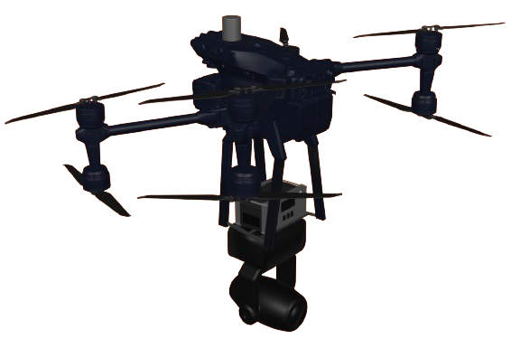

Estudi i disseny d’un dron
per a esdeveniments

Dron amb Cap mòbil LED
De què tracta aquest TRB?
El projecte busca substituir els sistemes d'il·luminació fixos ("truss") per un dron amb il·luminació mòbil per millorar la mobilitat. Es modela virtualment un dron amb il·luminació mòbil per investigar el seu funcionament i necessitats específiques en il·luminació audiovisual. S'utilitza el DJI FlyCart 30, un dron de 65 kg dissenyat per al transport de mercaderies, modificat per portar una bateria i un cap mòbil d'il·luminació. Aquest dron pot carregar fins a 30 kg. També s'exploren diferents caps mòbils d'il·luminació escènica (Wash, Beam i Espot) per crear diversos efectes. La bateria és una estació elèctrica portàtil amb bateries LiFePO4, que ofereix protecció contra sobreescalfament, sobrecàrrega i curtcircuits.